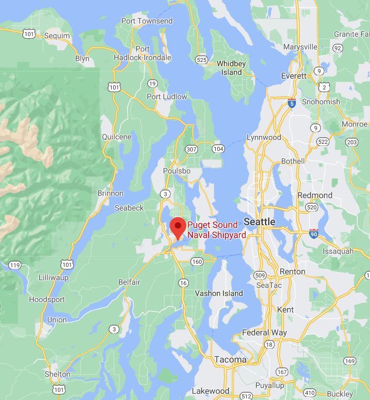
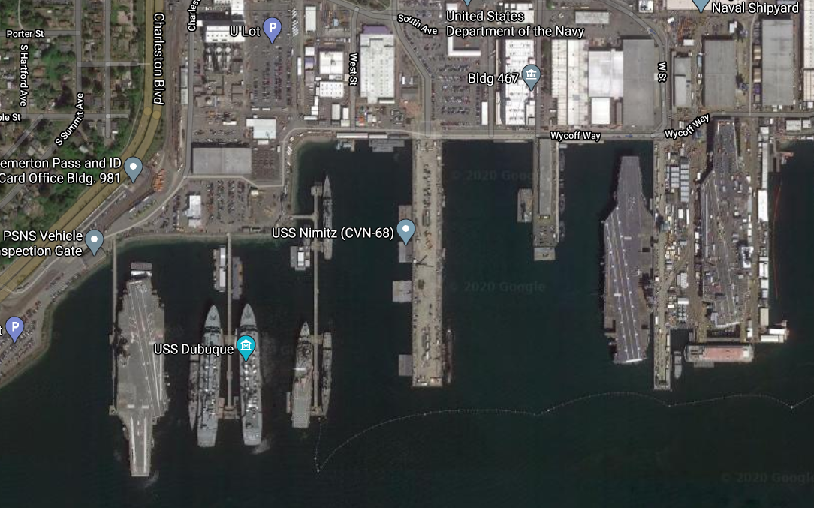
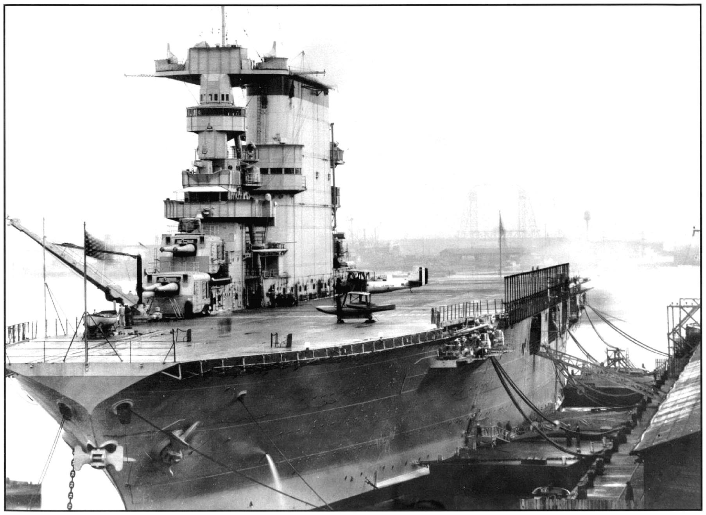
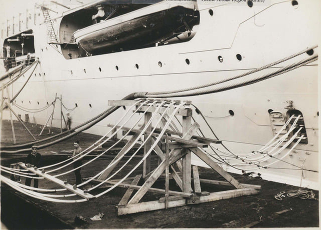
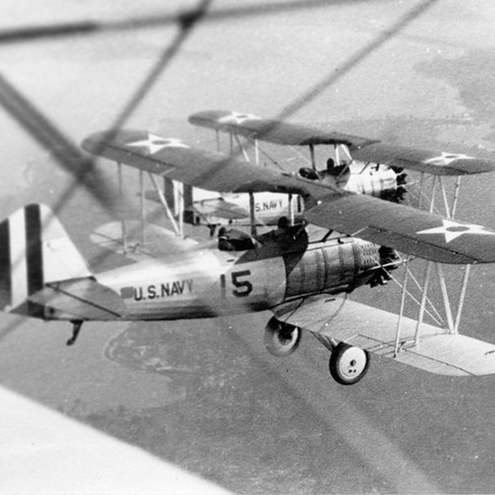
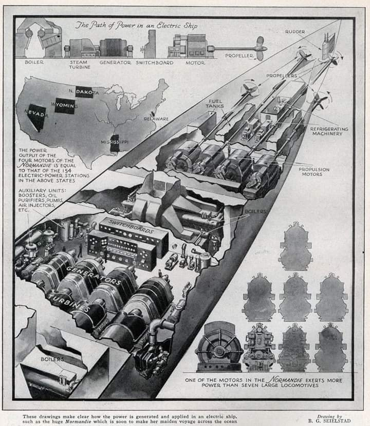
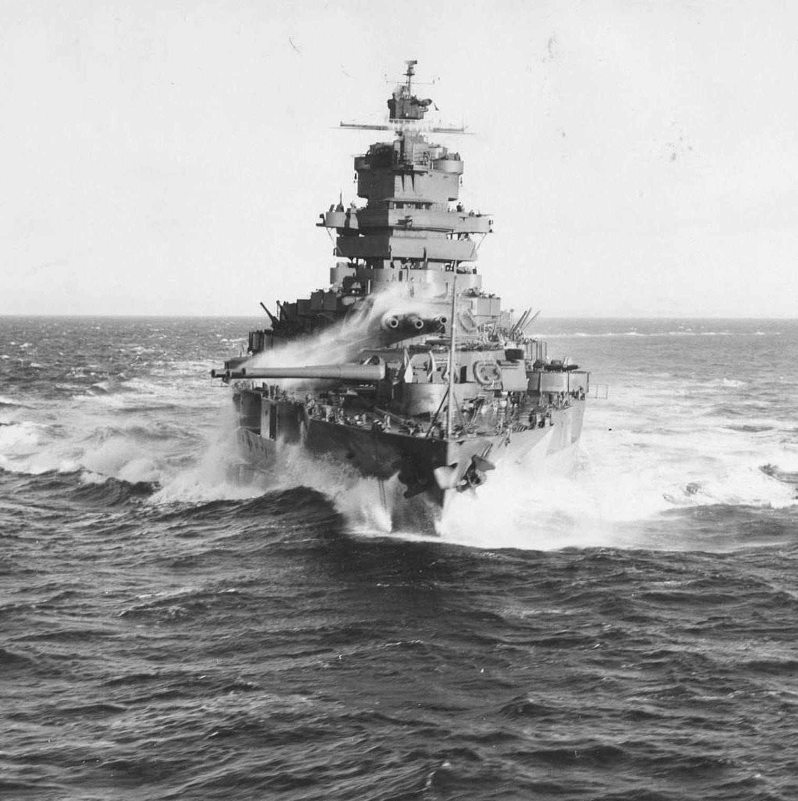
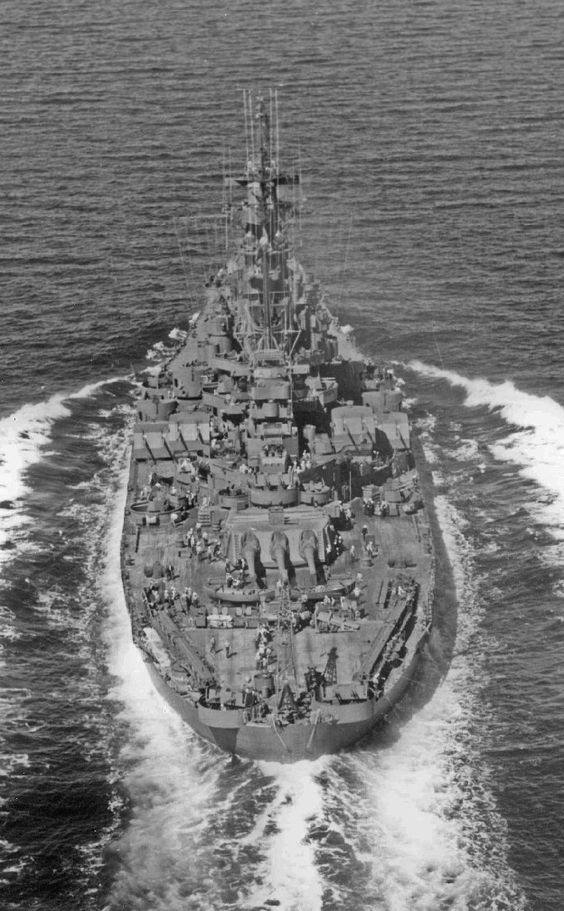
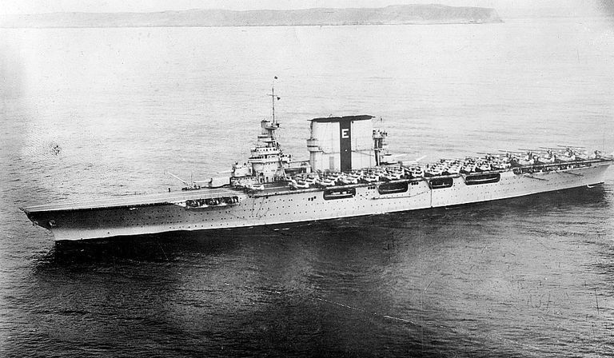

전기 셔틀 노릇을 한 항공모함 - USS Lexington 이야기
게시: 2020-12-31T06:30:39+09:00
시애틀 근처의 작은 도시인 타코마(Tacoma) 시는 제1차 세계대전 이후 인구와 산업이 불어나면서, 늘어나는 전력 수요 감당을 위해 몇 년 전에 쿠쉬먼 댐(Cushman Dam No. 1)을 건설했습니다. 이렇게 그 수력 발전에서 나오는 전력에 의존하던 타코마 시에 1929년 겨울, 뜻하지 않은 재앙이 닥쳤습니다. 시애틀은 비가 자주 오는 곳이라서 그럴 줄은 몰랐는데 여기에도 가뭄이 든 것입니다. 쿠쉬먼 호수의 수위가 낮아지면서 쿠쉬먼 댐에서의 수력 발전에 문제가 생겼고, 당장 타코마 시는 전력 공급이 중단되었습니다. 그로 인해 공장과 상점이 문을 닫아야 했고, 단기 실업자가 급증했습니다.

(지금도 존재하는 퓨짓 사운드 미해군 조선소의 위치입니다. 지도 아래에 타코마가 보입니다.)

(구글맵에서 찾아본 퓨짓 사운드 해군 조선소입니다. 당연한 말이지만, 부럽네요.)
시애틀이나 타코마나 모두 미국 워싱턴주 서해안의 퓨짓 사운드(Puget Sound)라는 커다란 만 안쪽에 위치해 있습니다. 바로 그 만 안에 퓨짓 사운드 해군 조선소도 있습니다. 그리고 때마침 거기에 2년 전에 취역하여 훈련 중이던 항공모함 USS Lexington (CV-2, 4만7천톤, 33노트)이 있었습니다. 미국 정부는 타코마 시에 렉싱턴 호를 파견합니다. 타코마 항 부두에 접안한 렉싱턴은 함체에서 굵은 전선 다발을 쏟아내어 항구의 전력망에 연결했고, 놀랍게도 타코마 시에 전력을 쏟아붓기 시작했습니다. 이렇게 해상 발전소 노릇을 시작한 렉싱턴 호는 12월 17일부터 다음해인 1930년 1월 16일까지 한달 간 450만 kWH의 전력을 제공했습니다. 렉싱턴은 1월 중순 비가 내려 다시 수력 발전이 가능해지자 비로소 타코마를 떠났습니다. 미해군이 타코마 시에 선사한 크리스마스 선물이었지요.
 
(타코마 시에 전기 셔틀 노릇하고 있는 렉싱턴 호입니다. 뒤에서 설명하겠지만, 훨씬 더 진보된 항모이자 WW2에서 맹활약했던 Essex급 항모들은 이런 거 할 수 없었습니다.)
진짜 크리스마스 행사도 있었습니다. 렉싱턴 호는 타코마의 빈곤층 아동(poverty children이라고 하지 않고 disadvantaged children이라고 표현합니다)을 격납고로 초대해서 파티를 가졌는데, 그 파티의 클라이막스는 산타클로스의 방문이었습니다. 렉싱턴은 미국 항모 특유의 개방형 격납고를 가지고 있었는데, 함체 옆에 넓게 뚫린 출입구(bay)를 통해 콜세어(Vought O2U Corsair) 정찰기가 격납고로 내려왔고 여기에 산타클로스가 타고 있었습니다.

(여기서 말하는 콜세어는 WW2에서 활약했던 갈매기 날개를 가진 전폭기 콜세어가 아니라 1920년대의 복엽 정찰기입니다.)
핵추진 항모도 아닌데, 작은 도시의 발전소 역할을 해내다니 대단하지요? 그러나 모든 항공모함이 이런 역할을 해낼 수 있는 것은 아닙니다. 렉싱턴은 전기 터빈식 추진장치(turbo-electric drive)를 가지고 있었기 때문에 이런 것이 가능했습니다. 전기 터빈식 추진장치란 보일러에서 나온 증기로 터빈을 돌리고 그 힘으로 발전기를 돌려 전기를 만든 뒤 그 전기로 전기 모터를 회전시켜 스크루를 돌리는 방식입니다. 렉싱턴에는 16개의 보일러에서 최대 18만 마력, 13만 kW의 파워를 낼 수 있었고, 이 보일러에서 나온 증기로 4개의 터빈과 거기에 달린 발전기를 돌렸습니다.

(이건 프랑스의 여객선인 SS Normandie의 전기 터빈 추진장치를 보여주는 단면도입니다. 보일러와 터빈, 그에 연결된 발전기와 모터 등을 볼 수 있습니다. 특히 군용보다는 여객선에 매우 좋은 시스템이었습니다. 그 이유는 아래에서 보실 수 있습니다.)
왜 증기 터빈에서 나온 회전력으로 그냥 스크루를 그대로 돌리지 않고 이런 복잡한 방식을 썼을까요 ? 당연히 이점이 많았기 때문인데, 그 중 가장 큰 것은 바로 항속거리 증가였습니다. 제1차 세계대전을 거친 뒤 대서양 뿐만 아니라 태평양까지 전세계의 제해권을 노리던 미해군에게는 항속거리 증가가 매우 중요했습니다. 보통 증기 터빈은 고속 회전할 때 가장 연료 효율이 좋습니다. 그러나 스크루는 훨씬 더 저속으로 회전해야 연료 효율이 좋습니다. 물 속에서 엄청나게 빠른 속도로 스크루를 회전시키면 많은 에너지가 케비테이션(cavitation) 현상으로 낭비되어 버리거든요. 그리고 군함이 항상 고속으로 항해할 필요는 없습니다. 그래서 결국 복잡하고 정교한 거대 톱니바퀴들로 이루어진 감속 기어박스(reduction gear)를 터빈과 스크루 사이에 넣어야 합니다. 이렇게 커다란 쇳덩이 기어박스는 그 무게 때문에 연료 효율을 떨어뜨리는 요소가 됩니다. 보통 전함이나 항공모함 같은 대형 선박은 스크루가 3개 혹은 4개 달려 있는데, 연료를 아끼면서 적절한 저속을 내기 위해 4개의 스크루 중에서 2개를 그냥 정지시키는 것도 생각해볼 수 있습니다. 보일러의 연료 효율을 높이기 위해, 평상시에는 절반의 보일러만 켜고 항행하는 거지요. 그러나 이것도 문제를 일으킵니다. 물 속에서 정지한 스크루는 꽤 큰 항력(drag)을 일으키거든요. 그래서 좋든 싫든 전체 보일러에 모두 다 불을 때면서 연료 효율이 낮은 저속으로 항진해야 합니다. 게다가 터빈과 기어박스는 무척 무겁기 때문에, 보통 함체의 중간에 위치해야 합니다. 그러나 스크루는 함미 바깥에 있지요. 따라서 스크루 축(shaft)이 굉장히 길어지게 됩니다. 스크루 축 자체도 상당히 무거운 강철봉이기 때문에 또 연료 효율을 떨어뜨리는 요소가 됩니다. 문제가 또 있었습니다. 군함도 가끔 후진할 필요가 있었는데, 그를 위해서는 별도의 후진용 터빈을 갖추어야 했습니다. 역시 무게가 늘어나고 연료 효율이 떨어지는 요소였습니다. 이 모든 문제를 해결하는 것이 바로 전기 터빈식 추진장치였습니다. 터빈과 스크루 사이에 기계적 연결이 전혀 없으므로, 터빈을 돌려서 발전기를 돌리는 것은 군함이 어떤 속도로 항진하던 간에 상관없이 그냥 연료 효율이 좋은 상태로 계속 돌릴 수 있었습니다. 또 일부 보일러를 꺼도 상관없었습니다. 그리고 속도 조절은 전기 모터 회전 속도만 바꾸면 되었으므로 거대한 기어박스가 필요없었습니다. 후진도 매우 간단했습니다. 그냥 전기 모터의 전류 흐름만 반대로 바꾸면 되었으니까요. 게다가 모터는 그렇게 무겁지 않았으므로 함미 쪽에 두어도 괜찮았습니다. 따라서 스크루 축이 짧아도 상관 없었습니다. 게다가 전기 터빈식은 보일러로부터 시작되는 증기 파이프나 스크루 축 등이 짧아졌으므로 군함 내부의 격리가 더 쉬웠습니다. 그래서 어뢰 피격시 침수 제어가 훨씬 더 유리했습니다. 그 외에, 당시로서는 아직 절실하지는 않았지만 전기식 포탑 회전이나 레이더, 무전 장치 등 많은 전력이 필요한 장비에 전기를 공급하는 것도 쉬웠습니다. 그래서 1917년 진수된 전함 USS New Mexico (BB-40)부터 시작하여, 테네시 급과 콜로라도 급 등 1920년대에 진수된 미해군의 전함들과 항공모함들은 대부분 전기 터빈 추진장치로 되어 있었습니다. 렉싱턴도 그 중 하나였지요.

(세계 최초의 전기 터빈 추진 방식의 전함 USS New Mexico입니다.)
덕분에 USS New Mexico든 미해군 주요 전함들은 한번 급유로 8천 해리, 즉 1만5천 km를 10 노트라는 저속으로 주파할 수 있었습니다. 이건 로스엔젤리스에서 싱가폴까지 아주 여유있게 갈 수 있는 항속 거리입니다. 그러나 전기 터빈 추진장치의 전성시대는 1921년 진수된 Colorado급 전함 USS West Virginia (BB-48)까지였습니다. 콜로라도 급의 뒤를 이은 것이 1940년 진수된 USS North Carolina (BB-55)를 선두로 한 노스 캐롤라이나 급, 그리고 그 뒤를 이은 South Dakota 급과 Iowa 급 전함들은 모두 재래식이 되어버렸던 감속 기어박스를 장착한 geared steam turbine 방식으로 되돌아 갔습니다.

(양덕들이 소닥 SoDak이라고 부르는 USS South Dakota (BB-57)의 1944년 모습입니다. 저는 밀덕이 아니라 잘 모릅니다만 Iowa급이 나오기 전까지는 정말 세계 최고의 전함이라고 양덕들이 치켜 세우는 전함입니다. 이렇게 우수한 전함도 작은 도시를 위해 전기 셔틀 노릇은 하지 못합니다. 전기 터빈 추진 방식이 아니기 때문입니다. 전기 셔틀도 아무나 하는 것 아닙니다.)
그렇게 된 이유는 그 동안 감속 기어 방식에 기술 발전이 있어서 연료 효율이 좋아지고 그에 따라 항속 거리도 좋아졌으며, 또 전기 터빈 방식에도 단점이 있었기 때문이었습니다. 일단 전기 터빈 방식이 건조 비용에 있어 조금 더 비쌌습니다. 기어박스가 없는 대신 전기 모터와 발전기를 붙이다 보니 그것도 무거웠고요. 그리고 아무래도 일반 여객선과는 달리 군함은 언제든 대포알과 폭탄, 어뢰 등에 두들겨 맞을 준비가 되어 있어야 했는데, 복잡한 전기 배선이 잔뜩 들어있는 전기 터빈 방식은 그런 전투 피해 상황에서 빠른 복구가 어렵다고 생각되었습니다. 소금물이 언제든지 콸콸 쏟아져 들어올 수 있는 상황에서 고압 전류가 흐르는 발전기와 모터를 다루는 것도 부담이 되었지만, 혹시라도 파편 등이 주요 전선 뭉치를 날려버릴 경우, 화재와 침수에 난리가 난 상황에서 그 복잡한 배선을 다시 연결하는 것이 쉽지는 않을테니까요.

(미해군의 3번째 항모인 USS Saratoga (CV-3)입니다. 렉싱턴과 자매함으로서, 실제로 렉싱턴과 외관상 100% 똑같아서, 이 둘을 구별하기 위해 일부러 저렇게 굴뚝에 세로로 검은 선을 넣었다고 합니다.)
실제로 그런 우려가 사실로 드러난 항모가 바로 1925년에 진수된 렉싱턴급 항모 USS Saratoga (CV-3)였습니다. 새러토가는 1942년 8월 솔로몬 해 전투에 참전했었는데, 거기서 일본 잠수함에게 어뢰를 한방 얻어 맞았습니다. 4만3천톤 짜리 항모라면 어뢰 1방에 침몰하거나 항행 불능 상태가 되어서는 안됩니다. 그런데 그런 일이 발생해버렸습니다. 기관실이 하나 침수되기는 했으나, 보일러가 16개나 되므로 문제가 없어야 했는데 그만 복합적인 합선이 여러 곳에서 발생하는 바람에 그만 새러토가는 한동안 꼼짝 못하고 바다 위에 표류하는 상태가 되어 버렸습니다. 결국 그 합선 문제가 해결되는 동안 중순양함 USS Minneapolis가 새러토가를 끌고 다녀야 했습니다. 해군으로서는 끔찍한 상황이었지요.
이런 문제도 있고, 특히 거포를 장착한 전함의 경우엔 적의 포탄이나 어뢰에 맞지 않았다고 해도 14인치~15인치의 거포를 쏠 때의 충격에 의해 전기 모터의 부품에 문제가 생길 것이라는 우려도 있었습니다. 그래서 세계 최초의 전기 터빈 추진 방식의 전함이었던 USS New Mexico도 1930년대 초에 이루어진 현대화 작업에서 '현대화'라는 이름에 걸맞지 않게 전기 터빈 추진장치를 전통적인 감속 기어를 갖춘 증기 터빈으로 바꾸었습니다.
Source : www.navweaps.com/index_tech/tech-038.php
en.wikipedia.org/wiki/USS_Lexington_(CV-2)
en.wikipedia.org/wiki/Colorado-class_battleship
en.wikipedia.org/wiki/New_Mexico-class_battleship
www.facebook.com/navalgeneralboard/photos/a.1328419267274223/2389937137789092/